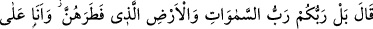
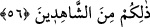
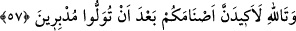

56. “Hayır, sizin Rabbiniz, yarattığı göklerin ve yerin de Rabbidir ve ben buna
şahitlik edenlerdenim.” dedi.
“Hayır,” ben oyun oynayanlardan değilim “sizin Rabbiniz, yarattığı göklerin ve
yerin de Rabbidir.” Daha önceden hiç benzerleri olmadığı halde onları, ilk O
yaratmıştır. O, terbiye edici, Rab olduğu gibi Hâlık/yaratıcıdır da.
“__WORD__” zamîri, “gökler ve yer”e ya da 52. âyette geçen “heykeller”e râcidir. Bunun
anlamı, yaratılmışlar cümlesinden oldukları halde onlara nasıl ibâdet edersiniz?!
demektir.
“Ve ben buna” zikrettiğim üzere ne olursa olsun O’ndan başkasının değil, sâdece
O’nun sizin Rabbiniz, göklerin ve yerin Rabb’i olduğuna “şâhitlik edenlerdenim.”
Yâni, bunu hakîkat üzere delilleri ile bilenlerdenim.
Burada gerçek şahitlik murâd edilmemiştir. Çünkü iddiâ sâhibi, şâhid olamaz. Bilakis
şâhitlik, dâvâyı huccet ve delil ile doğrulamak anlamında bir istiâredir. Yâni, ben
iddiâlarımı oyun olsun diye ortaya atmadım. Kendisiyle dâvânın kesin hükme bağlandığı
şâhid yerindeki kesin deliller getirenlerdenim.
Kâşifî der ki: “Anlatıldığına göre Nemrut kavminin bayram günü vardı. O günde
sahrâya giderler, akşama dek gezinti yaparlardı. Akşam geri döneceklerinde puthaneye
girip putları süslerler, bir takım lisanlarla onları okşarlardı. Ondan sonra başlarını yere
koyup tapınma âdetini yerine getirirler, ardından evlerine dönerlerdi.
İbrahim (a.s.) bir toplulukla putlar hakkında münâzaraya girişti. Nemrût kavmi ona:
“Yarın bayram, sahraya gel de dinimizin ve merasimimizin ne güzel olduğunu gör”
dediler. İbrahim (a.s.): “Tamam, gelirim” diye karşılık verdi. Ertesi gün onu götürmek
istediklerinde İbrahim (a.s.) hasta olduğunu bahane ederek gitmedi. Nitekim el-Kısas’ta
böyle geçmektedir.”
57. Allâh’a yemin ederim ki, siz ayrılıp gittikten sonra putlarınıza bir oyun
oynayacağım!
Kavmi İbrâhim (a.s.)’ı bırakıp gittiler. İbrahim (a.s.) onlardan gizlice kendi kendine
şöyle dedi: “Allâh’a yemin ederim ki, siz” putlarınıza ibâdeti bırakıp bayram yerine
gitmek sûretiyle “ayrılıp gittikten sonra putlarınıza bir oyun oynayacağım!” Elbette